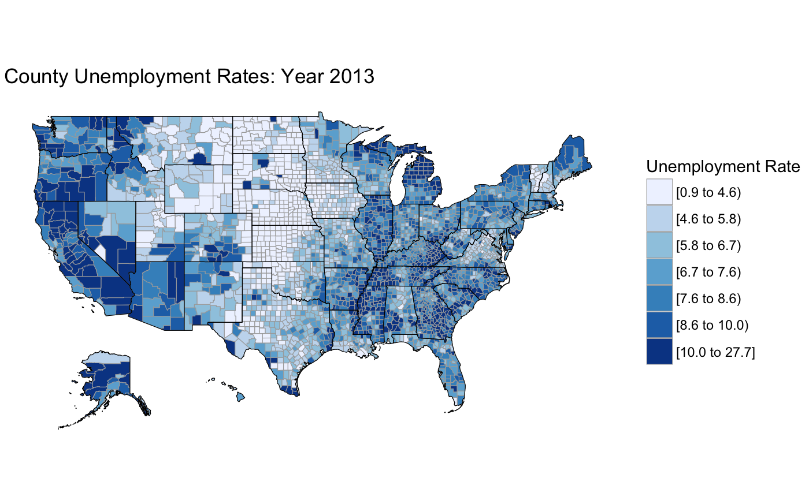

df_county_unemployment.RdContains annualized data from 1990-2013. Data comes from the US Bureau of Labor Statistics (BLS) Local Area Unemployment Statistics (LAUS) webpage: http://www.bls.gov/lau/. The "region" column contains the numeric version of the County FIPS Code.
data(df_county_unemployment)
Created via build_county_df() on January 4, 2015.
data(df_county_unemployment) head(df_county_unemployment)#> region county.name state.name 1990 1991 1992 1993 1994 1995 1996 1997 1998 #> 1 1001 autauga alabama 6.1 6.4 5.9 5.4 4.4 5.0 3.4 3.5 2.8 #> 2 1003 baldwin alabama 4.9 5.2 5.7 5.4 4.2 4.2 3.8 3.1 2.5 #> 3 1005 barbour alabama 7.3 8.2 9.8 9.1 5.6 7.3 8.3 6.6 4.3 #> 4 1007 bibb alabama 8.5 11.1 10.1 10.5 6.7 5.8 6.2 6.7 6.2 #> 5 1009 blount alabama 5.9 5.4 5.6 4.8 3.7 3.9 2.8 2.7 2.9 #> 6 1011 bullock alabama 11.7 17.8 13.7 13.5 12.6 15.0 12.8 9.4 9.4 #> 1999 2000 2001 2002 2003 2004 2005 2006 2007 2008 2009 2010 2011 2012 2013 #> 1 3.4 3.6 3.7 4.4 4.6 4.3 3.2 2.9 2.8 4.5 8.6 7.6 7.6 6.3 5.7 #> 2 3.0 3.3 3.9 4.6 4.5 4.6 3.4 2.8 2.7 4.1 8.6 8.6 7.8 6.7 5.8 #> 3 4.3 4.9 6.8 7.0 6.4 6.4 4.9 4.9 5.4 7.7 12.7 11.8 10.8 11.0 10.0 #> 4 6.2 4.7 6.2 6.4 5.4 4.9 3.8 3.6 3.5 5.1 11.8 10.0 9.3 7.5 6.8 #> 5 2.5 3.1 3.3 4.9 4.2 3.7 3.1 2.8 2.7 4.1 8.8 8.7 7.8 6.1 5.6 #> 6 9.1 7.6 9.1 9.3 10.0 10.4 8.1 7.7 8.2 9.3 13.9 14.2 14.2 13.2 12.0boxplot(df_county_unemployment[, c(-1, -2, -3)], main="USA County Unemployment Data", xlab="Year", ylab="Percent Unemployment")#> Warning: The following regions were missing and are being set to NA: 15005